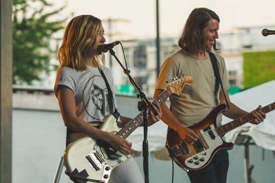

Bo! Escuchate Esto
Inicio
Galeria
Notas
Galería
Nuestras mejores fotos
capturadas para vos
Festival Chihuahua
Los Synes en La trastienda
Tributo a Amy Winehouse en YY
Steve Carrusel en Bago
Los Moors en The Bar

Festival Coachella